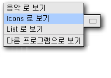

파일, 폴더 및
보기
|
|  |
위치막대의 팝업 메뉴에서 가능한 보기의 목록을 볼수 있습니다.
파일이나 폴더를 아이콘이나, 리스트, 또는 특수한 파일 형식에
알맞는 특별한 보기로 볼수 있습니다. 예를 들어, MP3파일은
음악으로 보기로 볼수 있습니다.
-
목록 보기에서는, 행의 처음을 눌러서 항목을 재배열 할수 있습니다.
-
아이콘 보기에서는, 편집 메뉴를 열고, 항목 배치를 선택하여서 아이콘의
배치 옵션을 볼수 있습니다.
-
아무 보기에서나, 확대와 축소를 할수 있습니다. 텍스트 파일을 확대
하면 그 내용을 많이 볼수 있습니다. 그림파일은 그 파일이 포함하는
그림을 한번에 알아볼수 있는 견본으로 표시됩니다.
-
아이콘 보기에서는, 각각의 아이콘을 확대 할수 있습니다. 예를 들어
자주 찾는 폴더의 아이콘을 확대 할려면, 폴더의 아이콘을 선택하고
편집메뉴를 연 다음, 아이콘 확대를 선택하고 아이콘을 "조절" 합니다.
(확대를 끝내면 아이콘 바깥을 마우스 왼쪽 버튼으로 누릅니다.)
파일이나 폴더를 복사하거나 이름을 바꾸거나 지우려면, 항목을 마우스
오른 버튼으로 누르고 팝업 메뉴에서 선택 하거나, 파일 메뉴를 열고
원하는 옵션을 선택합니다.
|
|